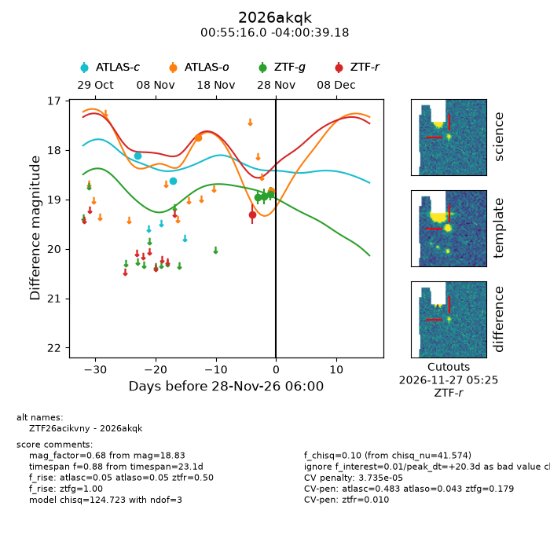
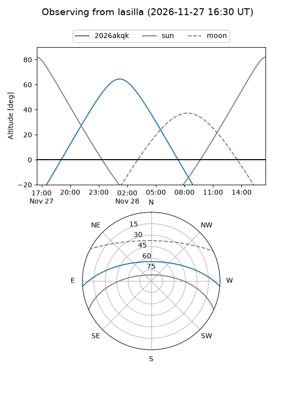
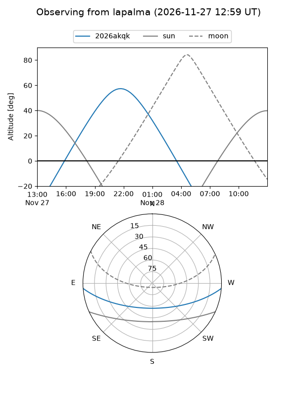
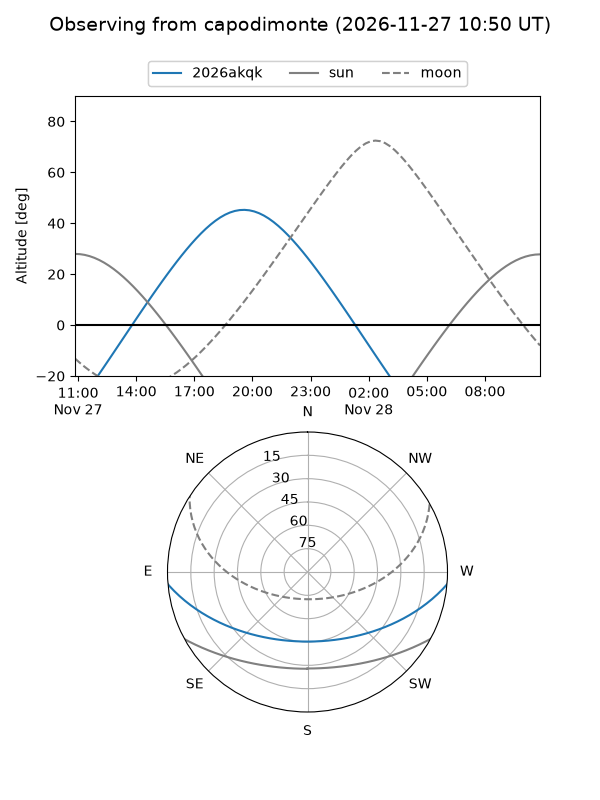
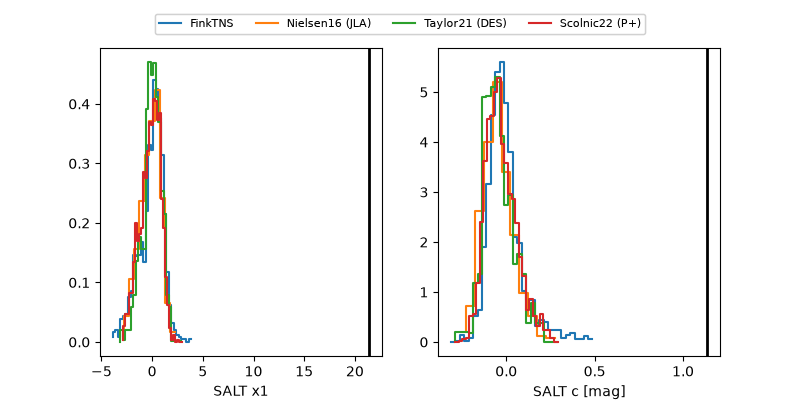

2026akqk
Target 2026akqk at 2026-11-28 06:02
Aliases and brokers:
FINK-ZTF: ztf.fink-portal.org/ZTF26acikvny
Lasair-ZTF: lasair-ztf.lsst.ac.uk/objects/ZTF26acikvny
ALeRCE-ZTF: alerce.online/object/ZTF26acikvny
YSE-PZ: ziggy.ucolick.org/yse/transient_detail/2026akqk
TNS name: wis-tns.org/object/2026akqk
Direct TNS query: direct search
alt names
ZTF26acikvny (ztf,fink_ztf)
2026akqk (tns,yse)
Coordinates:
equatorial (ra, dec) = 13.8168,-4.01088
equatorial (HMS+DMS) = 00:55:16.02,-04:00:39.18
galactic (l, b) = (125.3630,-66.86455)
Flags:
likely cv: !!
CV pen: 3.73461601735566e-05
peak dt: +20.3
Photometry:
last atlasc=18.62, atlaso=18.83, ztfg=18.89, ztfr=19.30
2 atlasc, 2 atlaso, 3 ztfg, 1 ztfr detections
Lightcurve

Visibility



Additional plots
